FileCommitProtocol: staging and finalizing V1 file output
component index
FileCommitProtocol separates writing records from committing their files. For a Spark SQL V1 write, FileFormatWriter delegates attempt paths, task completion, and job completion to one protocol instance per write, serialized to executor tasks. The default SQL implementation at this revision, SQLHadoopMapReduceCommitProtocol, adapts a Hadoop mapreduce.OutputCommitter. It is distinct from both the Parquet encoder and the driver's per-task permission service. DataSource V1 here does not mean Hadoop FileOutputCommitter algorithm version 1.
Flow at a glance
- Executor writer: Stage new east and west files for a dynamic partition overwrite.
- Task protocol: Commit the attempt output and report east and west as touched directories.
- Driver protocol: Run Hadoop job commit, then replace east and west from staging.
Watch for: North keeps its old data because no task touched it, and east and west are replaced separately rather than in one atomic swap.
Show the animated flow

What state travels where?
| Owner |
Inputs, state, and outputs |
| Driver |
The V1 command selects the protocol with a write UUID, target path, and dynamic-overwrite flag. setupJob(JobContext) creates the underlying committer and calls Hadoop setup. The Hadoop committer itself is transient: tasks do not share the driver's object. |
| Executor attempt |
setupTask(TaskAttemptContext) obtains its own Hadoop committer and initializes addedAbsPathFiles (temporary file to final absolute file) and partitionPaths (touched default directories for dynamic overwrite). Path requests take a directory and FileNameSpec; they return where the format writer should write, not where the file can already be read. |
| Back to driver |
commitTask returns TaskCommitMessage. The Hadoop adapter's payload is an immutable map/set pair, not the file contents. onTaskCommit is an optional per-result hook; commitJob(job, messages) finalizes the job. abortTask and abortJob are best effort. |
See the protocol contract, default configuration, SQL committer selection, and per-attempt state. spark.sql.sources.commitProtocolClass selects the Spark adapter; spark.sql.sources.outputCommitterClass can override the Hadoop committer. Those settings do not name the same interface.
Trace: overwrite two HDFS directory partitions dynamically
Assume hdfs:///reports/orders has region=east, region=west, and region=north. The new data touches only east and west. This trace uses the SQL Hadoop protocol with a FileOutputCommitter; another committer need not have the same paths or publication timing.
Sequence diagram · Open full sizeText equivalent
sequenceDiagram
participant D as Driver protocol
participant E as Executor writer and protocol
participant C as Driver commit coordinator
participant H as Hadoop committer and filesystem
D->>H: setupJob with staging output path
E->>H: setupTask, then write to attempt work path
opt Hadoop needs task commit and coordination enabled
E->>C: May this attempt commit this partition?
C-->>E: Permission only
end
E->>H: Commit task output if needed and permitted
E-->>D: Map of absolute files and set of touched directories
D->>H: Hadoop commitJob
D->>H: Replace touched directories from Spark staging, then clean staging
- The V1 command detects dynamic partition overwrite and directs this job to
.spark-staging-<write UUID> under the target. It does not pre-delete all matching partitions. For a normal relative path, the adapter uses the FileOutputCommitter work path and adds region=east and the filename. The filename includes the Spark split number and write ID; the caller supplies a suffix (for example a counter) when one task writes multiple files. Mode selection, staging decision, path allocation.
- A custom absolute partition location takes a different route: allocate a unique staging file and remember its final absolute path in
addedAbsPathFiles. After the writer closes its files, commitTask delegates to SparkHadoopMapRedUtil: if Hadoop needs a commit and coordination is enabled, ask the driver; if allowed, invoke Hadoop commitTask. A grant is not a filesystem operation. Absolute path and naming, task message, permission gate.
- The driver calls Hadoop
commitJob first. For a valid output path it then unions the messages, creates absolute destination parents and moves custom-location files if any. In dynamic mode it replaces each touched default directory from Spark staging and finally deletes staging. East and west are handled separately; north was not in the messages and is left alone. For a non-FileOutputCommitter in dynamic mode this adapter first checks the staged default partitions still exist before deleting destinations. Hadoop commit and preflight, moves and cleanup.
Failures and visibility
Using output committer class ... identifies which implementation to inspect. Hadoop FileOutputCommitter algorithms 1 and 2 perform different amounts of promotion at task commit versus job commit; custom committers and object stores can differ again. A successful task or a visible part-... file is not proof that the job committed atomically.
If a task fails, inspect its Hadoop attempt ID and temporary work path. If all tasks finished but the driver reports Failed to rename, inspect the named source and destination and the driver-side commit exception. For dynamic overwrite there are separate delete/rename operations per partition; later failure need not restore an earlier directory. A killed driver may never call abort, and IO failures during abort are logged. Keep evidence of the attempt paths and selected committer rather than treating leftover staging as published data. Algorithm differences, job abort, task abort.